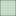

<!DOCTYPE html>
<html lang="en">
  <head>
  <!-- West Midlands Combined Authority on GitHub -->
  <!-- Si Chun Lam 5 May 2023 -->
  <title>Community Green Grants &mdash; West Midlands Combined Authority</title>
    <meta charset="utf-8">
    <meta name="robots" content="index,follow">
    <meta name="Keywords" content="Inclusive Growth Framework, West Midlands Combined Authority, WMCA, Si Chun Lam">
    <meta name="Description" content="Inclusive Growth Framework &mdash; West Midlands Combined Authority">
    <meta name="Author" content="Si Chun Lam">
    <link rel="icon" type="image/png" href="/res/wmca-favicon.png">
    <link rel="stylesheet" href="https://www.wmca.org.uk/css/wmcads.min.css">
    <style media="screen, print">
      @import url("/res/style.css");
    </style>
        <meta http-equiv="X-UA-Compatible" content="IE=edge">
        <meta name="viewport" content="initial-scale=1,user-scalable=no,maximum-scale=1,width=device-width">
        <meta name="mobile-web-app-capable" content="yes">
        <meta name="apple-mobile-web-app-capable" content="yes">
        <link rel="stylesheet" href="css/leaflet.css">
        <link rel="stylesheet" href="css/qgis2web.css"><link rel="stylesheet" href="css/fontawesome-all.min.css">
        <link rel="stylesheet" href="css/leaflet-search.css">
        <style>
        html, body, #map {
            width: 100%;
            height: 100%;
            padding: 0;
            margin: 0;
        }
        </style>
    </head>
    <body>
        <div id="map">
        </div>
        <script src="js/qgis2web_expressions.js"></script>
        <script src="js/leaflet.js"></script>
        <script src="js/leaflet.rotatedMarker.js"></script>
        <script src="js/leaflet.pattern.js"></script>
        <script src="js/leaflet-hash.js"></script>
        <script src="js/Autolinker.min.js"></script>
        <script src="js/rbush.min.js"></script>
        <script src="js/labelgun.min.js"></script>
        <script src="js/labels.js"></script>
        <script src="js/leaflet-search.js"></script>
        <script src="data/Isochrones_1.js"></script>
        <script src="data/CommunityGreenGrantsandFundedProjects_2.js"></script>
        <script>
        var map = L.map('map', {
            zoomControl:true, maxZoom:28, minZoom:1
        }).fitBounds([[52.35781717944272,-2.2662256881774714],[52.700328669492656,-1.3013032863022234]]);
        var hash = new L.Hash(map);
        map.attributionControl.setPrefix('<a href="https://github.com/tomchadwin/qgis2web" target="_blank">qgis2web</a> &middot; <a href="https://leafletjs.com" title="A JS library for interactive maps">Leaflet</a> &middot; <a href="https://qgis.org">QGIS</a>');
        var autolinker = new Autolinker({truncate: {length: 30, location: 'smart'}});
        var bounds_group = new L.featureGroup([]);
        function setBounds() {
        }
        map.createPane('pane_OpenStreetMap_0');
        map.getPane('pane_OpenStreetMap_0').style.zIndex = 400;
        var layer_OpenStreetMap_0 = L.tileLayer('https://tile.openstreetmap.org/{z}/{x}/{y}.png', {
            pane: 'pane_OpenStreetMap_0',
            opacity: 1.0,
            attribution: '',
            minZoom: 1,
            maxZoom: 28,
            minNativeZoom: 0,
            maxNativeZoom: 19
        });
        layer_OpenStreetMap_0;
        map.addLayer(layer_OpenStreetMap_0);
        function pop_Isochrones_1(feature, layer) {
            var popupContent = '<table>\
                    <tr>\
                        <th scope="row">Postcode</th>\
                        <td>' + (feature.properties['Postcode'] !== null ? autolinker.link(feature.properties['Postcode'].toLocaleString()) : '') + '</td>\
                    </tr>\
                    <tr>\
                        <th scope="row">CENTER_LON</th>\
                        <td>' + (feature.properties['CENTER_LON'] !== null ? autolinker.link(feature.properties['CENTER_LON'].toLocaleString()) : '') + '</td>\
                    </tr>\
                    <tr>\
                        <th scope="row">CENTER_LAT</th>\
                        <td>' + (feature.properties['CENTER_LAT'] !== null ? autolinker.link(feature.properties['CENTER_LAT'].toLocaleString()) : '') + '</td>\
                    </tr>\
                    <tr>\
                        <th scope="row">AA_MINS</th>\
                        <td>' + (feature.properties['AA_MINS'] !== null ? autolinker.link(feature.properties['AA_MINS'].toLocaleString()) : '') + '</td>\
                    </tr>\
                    <tr>\
                        <th scope="row">AA_MODE</th>\
                        <td>' + (feature.properties['AA_MODE'] !== null ? autolinker.link(feature.properties['AA_MODE'].toLocaleString()) : '') + '</td>\
                    </tr>\
                    <tr>\
                        <th scope="row">TOTAL_POP</th>\
                        <td>' + (feature.properties['TOTAL_POP'] !== null ? autolinker.link(feature.properties['TOTAL_POP'].toLocaleString()) : '') + '</td>\
                    </tr>\
                </table>';
            layer.bindPopup(popupContent, {maxHeight: 400});
        }

        function style_Isochrones_1_0(feature) {
            switch(String(feature.properties['AA_MINS'])) {
                case '15':
                    return {
                pane: 'pane_Isochrones_1',
                opacity: 1,
                color: 'rgba(0,0,0,0.5)',
                dashArray: '',
                lineCap: 'butt',
                lineJoin: 'miter',
                weight: 1.0, 
                fill: true,
                fillOpacity: 1,
                fillColor: 'rgba(147,186,154,0.5)',
                interactive: true,
            }
                    break;
            }
        }
        map.createPane('pane_Isochrones_1');
        map.getPane('pane_Isochrones_1').style.zIndex = 401;
        map.getPane('pane_Isochrones_1').style['mix-blend-mode'] = 'normal';
        var layer_Isochrones_1 = new L.geoJson(json_Isochrones_1, {
            attribution: '',
            interactive: true,
            dataVar: 'json_Isochrones_1',
            layerName: 'layer_Isochrones_1',
            pane: 'pane_Isochrones_1',
            onEachFeature: pop_Isochrones_1,
            style: style_Isochrones_1_0,
        });
        bounds_group.addLayer(layer_Isochrones_1);
        map.addLayer(layer_Isochrones_1);
        function pop_CommunityGreenGrantsandFundedProjects_2(feature, layer) {
            var popupContent = '<table>\
                    <tr>\
                        <th scope="row">Project Size</th>\
                        <td>' + (feature.properties['Project Size'] !== null ? autolinker.link(feature.properties['Project Size'].toLocaleString()) : '') + '</td>\
                    </tr>\
                    <tr>\
                        <th scope="row">Organisation</th>\
                        <td>' + (feature.properties['Organisation'] !== null ? autolinker.link(feature.properties['Organisation'].toLocaleString()) : '') + '</td>\
                    </tr>\
                    <tr>\
                        <th scope="row">Project Name</th>\
                        <td>' + (feature.properties['Project Name'] !== null ? autolinker.link(feature.properties['Project Name'].toLocaleString()) : '') + '</td>\
                    </tr>\
                    <tr>\
                        <th scope="row">Area</th>\
                        <td>' + (feature.properties['Area'] !== null ? autolinker.link(feature.properties['Area'].toLocaleString()) : '') + '</td>\
                    </tr>\
                    <tr>\
                        <th scope="row">Postcode</th>\
                        <td>' + (feature.properties['Postcode'] !== null ? autolinker.link(feature.properties['Postcode'].toLocaleString()) : '') + '</td>\
                    </tr>\
                    <tr>\
                        <th scope="row">Beneficiaries</th>\
                        <td>' + (feature.properties['Beneficiaries'] !== null ? autolinker.link(feature.properties['Beneficiaries'].toLocaleString()) : '') + '</td>\
                    </tr>\
                    <tr>\
                        <th scope="row">Amount</th>\
                        <td>' + (feature.properties['Amount'] !== null ? autolinker.link(feature.properties['Amount'].toLocaleString()) : '') + '</td>\
                    </tr>\
                    <tr>\
                        <th scope="row">Start</th>\
                        <td>' + (feature.properties['Start'] !== null ? autolinker.link(feature.properties['Start'].toLocaleString()) : '') + '</td>\
                    </tr>\
                    <tr>\
                        <th scope="row">End</th>\
                        <td>' + (feature.properties['End'] !== null ? autolinker.link(feature.properties['End'].toLocaleString()) : '') + '</td>\
                    </tr>\
                    <tr>\
                        <th scope="row">Latitude</th>\
                        <td>' + (feature.properties['Latitude'] !== null ? autolinker.link(feature.properties['Latitude'].toLocaleString()) : '') + '</td>\
                    </tr>\
                    <tr>\
                        <th scope="row">Longitude</th>\
                        <td>' + (feature.properties['Longitude'] !== null ? autolinker.link(feature.properties['Longitude'].toLocaleString()) : '') + '</td>\
                    </tr>\
                    <tr>\
                        <th scope="row">ID</th>\
                        <td>' + (feature.properties['ID'] !== null ? autolinker.link(feature.properties['ID'].toLocaleString()) : '') + '</td>\
                    </tr>\
                    <tr>\
                        <th scope="row">Reference</th>\
                        <td>' + (feature.properties['Reference'] !== null ? autolinker.link(feature.properties['Reference'].toLocaleString()) : '') + '</td>\
                    </tr>\
                    <tr>\
                        <th scope="row">Funded in</th>\
                        <td>' + (feature.properties['Funded in'] !== null ? autolinker.link(feature.properties['Funded in'].toLocaleString()) : '') + '</td>\
                    </tr>\
                    <tr>\
                        <th scope="row">Google maps link</th>\
                        <td>' + (feature.properties['Google maps link'] !== null ? autolinker.link(feature.properties['Google maps link'].toLocaleString()) : '') + '</td>\
                    </tr>\
                </table>';
            layer.bindPopup(popupContent, {maxHeight: 400});
        }

        function style_CommunityGreenGrantsandFundedProjects_2_0() {
            return {
                pane: 'pane_CommunityGreenGrantsandFundedProjects_2',
                radius: 4.0,
                opacity: 1,
                color: 'rgba(61,128,53,1.0)',
                dashArray: '',
                lineCap: 'butt',
                lineJoin: 'miter',
                weight: 2.0,
                fill: true,
                fillOpacity: 1,
                fillColor: 'rgba(84,176,74,1.0)',
                interactive: true,
            }
        }
        map.createPane('pane_CommunityGreenGrantsandFundedProjects_2');
        map.getPane('pane_CommunityGreenGrantsandFundedProjects_2').style.zIndex = 402;
        map.getPane('pane_CommunityGreenGrantsandFundedProjects_2').style['mix-blend-mode'] = 'normal';
        var layer_CommunityGreenGrantsandFundedProjects_2 = new L.geoJson(json_CommunityGreenGrantsandFundedProjects_2, {
            attribution: '',
            interactive: true,
            dataVar: 'json_CommunityGreenGrantsandFundedProjects_2',
            layerName: 'layer_CommunityGreenGrantsandFundedProjects_2',
            pane: 'pane_CommunityGreenGrantsandFundedProjects_2',
            onEachFeature: pop_CommunityGreenGrantsandFundedProjects_2,
            pointToLayer: function (feature, latlng) {
                var context = {
                    feature: feature,
                    variables: {}
                };
                return L.circleMarker(latlng, style_CommunityGreenGrantsandFundedProjects_2_0(feature));
            },
        });
        bounds_group.addLayer(layer_CommunityGreenGrantsandFundedProjects_2);
        map.addLayer(layer_CommunityGreenGrantsandFundedProjects_2);
        var baseMaps = {};
        L.control.layers(baseMaps,{' Community Green Grants and Funded Projects': layer_CommunityGreenGrantsandFundedProjects_2,'Isochrones<br /><table><tr><td style="text-align: center;"></td><td>15 min</td></tr></table>': layer_Isochrones_1,"OpenStreetMap": layer_OpenStreetMap_0,}).addTo(map);
        setBounds();
        var i = 0;
        layer_CommunityGreenGrantsandFundedProjects_2.eachLayer(function(layer) {
            var context = {
                feature: layer.feature,
                variables: {}
            };
            layer.bindTooltip((layer.feature.properties['Project Name'] !== null?String('<div style="color: #323232; font-size: 10pt; font-family: \'Open Sans\', sans-serif;">' + layer.feature.properties['Project Name']) + '</div>':''), {permanent: true, offset: [-0, -16], className: 'css_CommunityGreenGrantsandFundedProjects_2'});
            labels.push(layer);
            totalMarkers += 1;
              layer.added = true;
              addLabel(layer, i);
              i++;
        });
        map.addControl(new L.Control.Search({
            layer: layer_CommunityGreenGrantsandFundedProjects_2,
            initial: false,
            hideMarkerOnCollapse: true,
            propertyName: 'Organisation'}));
        document.getElementsByClassName('search-button')[0].className +=
         ' fa fa-binoculars';
        resetLabels([layer_CommunityGreenGrantsandFundedProjects_2]);
        map.on("zoomend", function(){
            resetLabels([layer_CommunityGreenGrantsandFundedProjects_2]);
        });
        map.on("layeradd", function(){
            resetLabels([layer_CommunityGreenGrantsandFundedProjects_2]);
        });
        map.on("layerremove", function(){
            resetLabels([layer_CommunityGreenGrantsandFundedProjects_2]);
        });
        </script>
    </body>
</html>
